Interaction2
UMLInteraction
Untitled
::
4. Modelo De Analisis
::
RA_ Registrar Solicitud de Retroalimentacion Docente
::
Interaction2
Description
none
Diagrams

DS Registrar Solicitud
Participants
Lifeline1: Director
Lifeline2: CL_MENU
Lifeline3: CC_RetroalimentacionDocente
Lifeline4: CE_RetroalimentacionDocente
Lifeline5: CE_Docente
Lifeline6: RA_ Registrar Solicitud de Retroalimentacion Docente
Messages
Seleccionar la opcion registrar solicitud RD (Lifeline1→Lifeline2)
Solicitar carga de opcion registrar solicitud de RD (Lifeline2→Lifeline3)
Obtener datos RD (Lifeline3→Lifeline4)
devolver datos de RD (Lifeline4→Lifeline3)
Enviar listado de RD (Lifeline3→Lifeline6)
Cargar listado de RD (Lifeline6→Lifeline6)
Registrar comentarios de evaluacion (Lifeline1→Lifeline6)
enviar comentarios de evaluacion (Lifeline6→Lifeline3)
guardar datos de evaluacion (Lifeline3→Lifeline4)
Actualizar estado de evalucion (Lifeline3→Lifeline5)
mostrar msj de confirmacion (Lifeline6→Lifeline6)
cerrar pestaña (Lifeline1→Lifeline6)
cerrar (Lifeline6→Lifeline3)
Properties
Name
Value
name
Interaction2
stereotype
null
visibility
public
isReentrant
true
Owned Elements
DS Registrar Solicitud